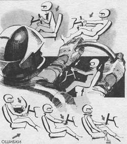

Безопасная посадка
Безопасность водителя любой квалификации начинается и заканчивается посадкой. Нельзя рассматривать ее как позу “удобного сидения” и как способ отдыха между какими-то движениями, связанными с управлением. Многие беспечные водители серьезно пострадали из-за того, что не уделили посадке необходимого внимания. Притом большинство из них находят объяснение аварии в чем-то более существенном, чем “беспечная” посадка, хотя она лишила их нескольких десятых долей секунды, которых затем не хватило для преодоления экстремальной ситуации.
Посадка не является приемом управления автомобилем, но без нее немыслима скоростная реакция водителя на опасность. Притом экстренные действия очень вариативны в зависимости от характера дорожной ситуации. Каждой критической ситуации соответствуют определенные экстренные действия, к которым должен быть готов водитель, чтобы выйти из этой ситуации достойно.
1. Занос вправо – резкий поворот рулевого колеса вправо, мягкое выравнивание.
2. Занос влево – то же в другую сторону.

Приучите себя держать обе руки в верхнем секторе рулевого колеса.
Максимально прижмитесь к спинке сидения.
Снимите со стекла и щитка приборов все, что может отвлечь ваше внимание.
Уменьшите громкость авто магнитолы или выключите ее.
Не вступайте в разговор за рулем.
3. Опрокидывание вправо – силовое руление вправо, балансирование, выравнивание.
4. Опрокидывание влево – то же в другую сторону.
5. Критический занос – скоростное руление (полной амплитуды) двумя руками с перехватами рулевого колеса на боковом секторе.
6. Ритмический занос – серия скоростных импульсов руления в одну и другую сторону.
7. Снос передней оси автомобиля – выравнивание рулевым колесом, торможение двигателем, подтормаживание левой ногой.
8. Экстренное торможение — ступенчатое торможение рабочим тормозом, последовательное включение понижающих передач с перегазовкой пяткой и задержкой включения сцепления. Коррекция устойчивости автомобиля рулевым колесом в каждый период растормаживания.
9. Экстренный объезд препятствия – силовое руление и выравнивание с переменным дросселированием. Компенсация заноса опережающим рулением.
10. Вращение автомобиля – серия последовательных действий: поворот рулевого колеса, резкое дросселирование, выключение сцепления, обратное руление, выравнивание, включение сцепления, дросселирование.
Здесь перечислены только 10 типичных вариантов критических ситуаций, хотя в жизни их может встретиться намного больше.
Чрезвычайно важным для безопасности является “чувство автомобиля”, которое обеспечивается посредством оптимальной посадки водителя, его контактом с автомобилем. Большая часть информации от автомобиля и дороги воспринимается “мышечным чувством” водителя.
Особенно актуальны эти ощущения при потере устойчивости и управляемости (при сносе, заносе, блокировке и пробуксовке, вращении и опрокидывании). “Мышечное чувство” дает опытному водителю сигнал к действию по стабилизации автомобиля и позволяет корректировать собственные действия по ходу развития критической ситуации.